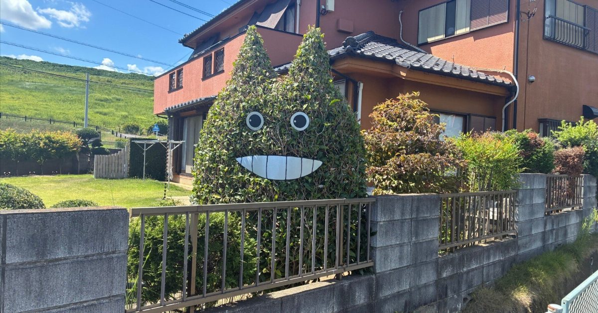
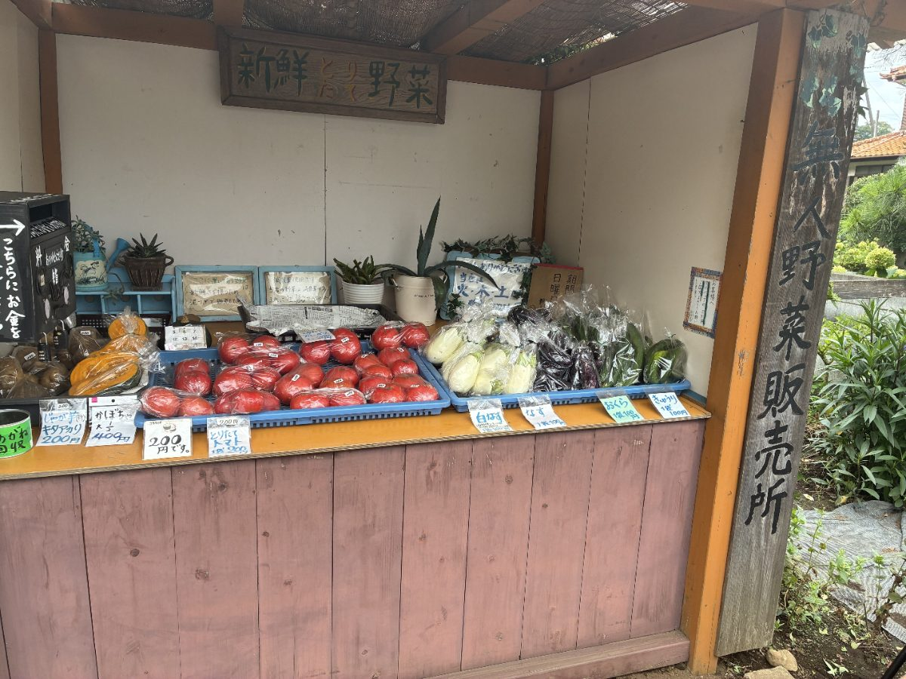
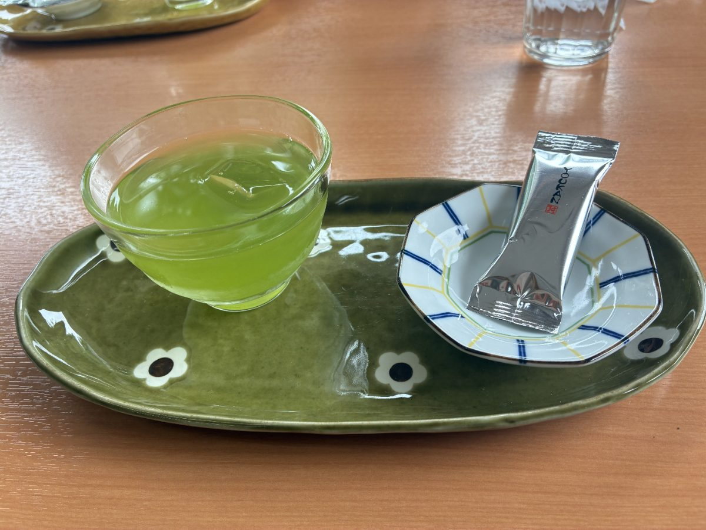

A Totoro Forest Day Trip from Tokyo Without a Car

"Where are we going, and what will we see?" Whenever someone asks me this about the Sayama Hills, I struggle a little. There is no waterfall, no famous temple, no spot built for photos. There are farm lanes, a reservoir and quiet woods. That is all.
And yet that is exactly why people come. This is the area said to have inspired My Neighbor Totoro, on the border of Tokyo and Saitama, and you can reach it by train in under an hour from Ikebukuro. No car needed. Here is how to get there, what the day looks like, and a few small things I have seen on this route that never make it into the guidebooks.
"This is like Germany"
On one walk, a guest from Germany and I followed the narrow path from Lake Sayama into the woods. Sunlight through the leaves, birds, wind. We walked for a while without talking. Then he said, half to himself: "This is like Germany."
Less than an hour from central Tokyo, and he felt at home. That sentence told me more about this place than any description I had written. The "Totoro Forests" are not one park. They are small woodland parcels protected by a local trust, the Totoro no Furusato Foundation, so there is no main gate, no ticket office and no gift shop. Local people walk their dogs here. Nothing is staged for visitors, and you can feel it.

How to get there by train
From Ikebukuro, take the Seibu Ikebukuro Line to Nishi-Tokorozawa, then change to the Seibu Sayama Line for Seibu-Kyujo-mae Station. It takes about 45 to 55 minutes from Ikebukuro, or about an hour from Tokyo Station. The Sayama Line runs less often than the main line, so check the timetable before you leave. The station name means "in front of the baseball stadium", but for this day it is simply the starting point for the woods.
The route: about 3 km, 3 to 5 hours
- Totoro Forest No. 1, on soft forest paths (about an hour)
- A viewpoint over Lake Sayama
- Mikajima Hachiman Shrine, a small forest shrine
- A tea break at Wada-en, a family-run Sayama tea shop (paid on site)
- The front gate of Kurosuke House, the Totoro Foundation's base
- A short ride back to Kotesashi or Higashi-Kurume Station
Wear shoes you do not mind getting muddy. After rain, some forest paths turn soft.
The hedge that stops everyone
Partway along the route there is an ordinary house with an ordinary garden, except that the owner has trimmed the hedge into the shape of Totoro. The eyes and mouth are painted on. There is no sign and no arrow pointing to it, but every person who walks past stops and takes a photo. Nobody asked them to do this. It is one neighbour's sense of fun, and to me it says more about this area than any official attraction could.
A vegetable stand with no one watching

By the roadside there is a small wooden stand with vegetables, handwritten prices and a box for coins. No staff, no camera. When I explained it to a guest from Germany, he was genuinely surprised: "Nobody steals?" For people in Japan this is an everyday sight, but when you are asked that question, you realise it is an unusual system. It works only because everyone assumes you pay.
That day there were white eggplants, so I bought some for him. He photographed them and asked me twice whether the price was really that low. Moments like this often show "Japan" better than any sightseeing explanation.
A cup of Sayama tea

The Sayama Hills are tea country. There is an old saying in Japan: "For colour, Shizuoka. For aroma, Uji. For flavour, Sayama." At Wada-en, a family-run tea shop on the route, the green tea is gentle, not bitter, with a savoury taste that stays with you. The owner once told me they also offer tea picking, but only in May.
Wada-en sits right next to Kurosuke House. One summer day the house was closed for the Obon holiday, so we could not go in. While we drank our tea, the shop staff apologised to us: "Sorry that Kurosuke House is closed." It had nothing to do with them. My guests laughed, and the whole group relaxed. Later, one of them wrote in a review that the tea house stop made everyone feel at ease. I think it was this moment.
Good to know about Kurosuke House
You can photograph the house from its front gate any day. Going inside is a separate booking with the Totoro Foundation (cash, 500 yen), and the house is open only on some weekdays and Saturdays, so plan ahead. It is closed on Sundays and national holidays, and it can close for holiday periods such as Obon. Check the foundation's website before you go.
"Nothing here" is the point
A tea break, a vegetable stand, a hedge, a quiet path. None of these would make a travel poster. But because the area is not commercialised, the air feels real, and because local people use these paths every day, there is a warmth that a theme park cannot copy. If that sounds like your kind of day, you can do the whole route on your own with the directions above.
If you would rather walk it with someone who knows the paths, I guide this route in small groups of up to 4 guests. It is an independent nature and culture walk, not affiliated with Studio Ghibli. Tour details · dates on GetYourGuide.
Some links on this page are affiliate links: booking through them supports this site at no extra cost to you.